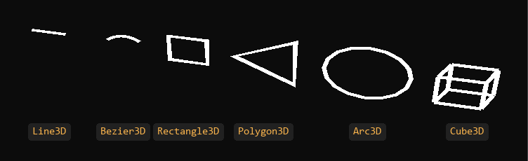

Lines 3D

Line meshes draw lines as real geometry: each segment is a strip of triangles with its own thickness, color and texture coordinates. Use them for paths, trajectories, measurements, wireframes and outlines that are part of the scene. For thousands of one-pixel debug lines, the line batch is cheaper.
A line entity has two components: a line mesh that generates the geometry (LineMesh, LineBezierMesh, LineRectangleMesh, LinePolygonMesh, LineArcMesh or LineCubeMesh, in Evergine.Components.Primitives) and a LineMeshRenderer3D that draws it.
Create a line in Evergine Studio
In the Entities Hierarchy panel, click Add Entity, open Lines3D and choose Line3D, Bezier3D, Rectangle3D, Polygon3D, Arc3D or Cube3D. Evergine Studio creates an entity with a Transform3D, the line mesh and a LineMeshRenderer3D.
Create a line from code
using System.Collections.Generic;
using Evergine.Common.Graphics;
using Evergine.Components.Graphics3D;
using Evergine.Components.Primitives;
using Evergine.Framework;
using Evergine.Framework.Graphics;
using Evergine.Mathematics;
public class MyScene : Scene
{
protected override void CreateScene()
{
// A path through three points that gets thinner and changes color along the way.
var path = new LineMesh()
{
LineType = LineType.LineStrip,
IsCameraAligned = true,
LinePoints = new List<LinePointInfo>()
{
new LinePointInfo() { Position = new Vector3(0, 0, 0), Thickness = 0.2f, Color = Color.Red },
new LinePointInfo() { Position = new Vector3(1, 1, 0), Thickness = 0.1f, Color = Color.Yellow },
new LinePointInfo() { Position = new Vector3(2, 0, 0), Thickness = 0.05f, Color = Color.Green },
},
};
Entity line = new Entity("path")
.AddComponent(new Transform3D())
.AddComponent(path)
.AddComponent(new LineMeshRenderer3D());
this.Managers.EntityManager.Add(line);
}
}
Note
Assigning LinePoints rebuilds the mesh. Changing a point inside the list does not, so assign the list again after editing its points.
Common properties
Every line mesh derives from LineMeshBase and has these properties:
| Property | Default | Description |
|---|---|---|
| IsCameraAligned | false (true for LineCubeMesh) |
Turns each segment to face the camera, so the line keeps its apparent thickness from any angle. When false, the strip lies flat in the plane of the points and can disappear when seen edge-on. |
| UseWorldSpace | false | Treat the point positions as world coordinates, ignoring the entity's transform. |
| DiffuseTexture | null | Texture applied along the line. Without one the line uses its vertex colors only. |
| DiffuseSampler | null | Sampler used to read DiffuseTexture. |
| TextureTiling | (1, 1) | How many times the texture repeats along (U) and across (V) the line. |
| TexcoordOffset | (0, 0) | Offset added to the texture coordinates. Animate it to make a texture flow along the line. |
LineMeshRenderer3D has one property of its own:
| Property | Default | Description |
|---|---|---|
| Layer | Alpha | The render layer the line is drawn in. Alpha lets semi-transparent colors and textures blend. |
Line primitives
LineMesh (Line3D)
A line through an explicit list of points.
| Property | Default | Description |
|---|---|---|
| LinePoints | empty | The points: each LinePointInfo has a Position, a Thickness and a Color. The line interpolates thickness and color between points. |
| LineType | LineList |
LineStrip joins every point to the next one. LineList takes the points in pairs, each pair an isolated segment. |
| IsLoop | false | For a strip, also joins the last point to the first. |
LineBezierMesh (Bezier3D)
A smooth curve through a list of points, shaped by their handles.
| Property | Default | Description |
|---|---|---|
| LinePoints | empty | The points: each BezierPointInfo has a Position, a Thickness, a Color and the InboundHandle and OutboundHandle that shape the curve on either side of it. |
| Type | Quadratic |
Quadratic segments are shaped by the InboundHandle of the point they end at. Cubic segments also use the OutboundHandle of the point they start from. |
| Resolution | 10 | Segments generated between two points, from 3 to 50. More is smoother. |
With Debug Lines enabled in the scene, the handles are drawn as yellow points.
LineRectangleMesh (Rectangle3D)
| Property | Default | Description |
|---|---|---|
| Width | 1 | Width of the rectangle. |
| Height | 1 | Height of the rectangle. |
| Origin | (0.5, 0.5) | Pivot of the rectangle as a fraction of its size; (0, 0) is the top-left corner. |
| Thickness | 0.1 | Line thickness. |
| Color | White | Line color, or tint of the texture. |
LinePolygonMesh (Polygon3D)
A regular polygon.
| Property | Default | Description |
|---|---|---|
| Vertices | 3 | Number of sides, from 3 to 50. |
| Radius | (1, 1) | Radius on each axis. Different values give an elongated polygon. |
| Thickness | 0.1 | Line thickness. |
| Color | White | Line color, or tint of the texture. |
LineArcMesh (Arc3D)
An arc or a full circle.
| Property | Default | Description |
|---|---|---|
| Angle | 2π (360°) | Angle of the arc, in radians in code and in degrees in Evergine Studio. 360° closes the circle. |
| Tessellation | 16 | Segments used to draw the arc, from 3 to 50. |
| Radius | (1, 1) | Radius on each axis; different values give an ellipse. |
| Thickness | 0.1 | Line thickness. |
| Color | White | Line color, or tint of the texture. |
LineCubeMesh (Cube3D)
The twelve edges of a box.
| Property | Default | Description |
|---|---|---|
| Size | (1, 1, 1) | Size of the box. |
| Origin | (0.5, 0.5, 0.5) | Pivot of the box as a fraction of its size. |
| Thickness | 0.1 | Line thickness. |
| Color | White | Line color, or tint of the texture. |